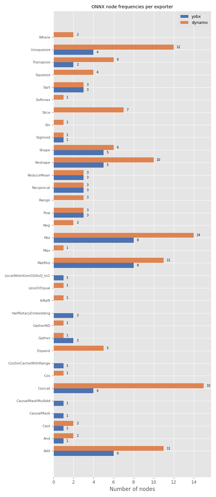

Note
Go to the end to download the full example code.
Export Tiny-LLM with different ways#
The example exports the same model with different ways and compares the model composition (the node distribution).
Imports#
import argparse
import sys
import matplotlib.pyplot as plt
import numpy as np
import onnx
import onnxruntime
import torch
from transformers import AutoConfig, AutoModelForCausalLM, AutoTokenizer
from yobx.helpers import max_diff
from yobx.helpers.rt_helper import make_feeds
from yobx.torch.torch_helper import torch_deepcopy
from yobx.torch.in_transformers.cache_helper import make_dynamic_cache
from yobx.torch import apply_patches_for_model, to_onnx, ExportOptions
Command-line arguments#
--trained / --no-trained controls whether the full pre-trained
checkpoint is loaded (default: --trained). Pass --no-trained to
build a randomly initialised model from the architecture config only (faster,
no large download, suitable for CI).
--num-hidden-layers overrides the number of transformer decoder blocks in
the config before the model is built. Use a small value (e.g. 2) to
speed up export and reduce memory during development.
--model selects the HuggingFace model ID to use (default:
arnir0/Tiny-LLM). Any transformers.AutoModelForCausalLM-compatible model
can be passed here.
_DEFAULT_MODEL = "arnir0/Tiny-LLM"
parser = argparse.ArgumentParser(description="Export a HuggingFace LLM to ONNX.")
parser.add_argument(
"--model",
default=_DEFAULT_MODEL,
metavar="MODEL_ID",
help=(
f"HuggingFace model ID to export (default: {_DEFAULT_MODEL!r}). "
"Any AutoModelForCausalLM-compatible model can be used."
),
)
parser.add_argument(
"--trained",
action=argparse.BooleanOptionalAction,
default=True,
help=(
"Load the full pre-trained weights from HuggingFace Hub (default). "
"Pass --no-trained to build a randomly initialised model from the config "
"(no weight download, suitable for CI)."
),
)
parser.add_argument(
"--num-hidden-layers",
type=int,
default=None,
metavar="LAYERS",
help=(
"Override config.num_hidden_layers to N before building the model. "
"Reduces the number of transformer decoder blocks, which lowers memory "
"use and speeds up export. Defaults to the value in the model config."
),
)
parser.add_argument(
"--exporter", type=str, default="yobx,dynamo,tracing", help=("Tells which exporter to run.")
)
# parse_known_args avoids failures when sphinx-gallery passes extra arguments.
args, _ = parser.parse_known_args(sys.argv[1:])
Load model and tokenizer#
The tokenizer is always fetched from HuggingFace (small download).
The architecture config is fetched next; if --num-hidden-layers was given
the corresponding config attribute is overridden before the model is built.
By default the model is loaded with pre-trained weights (--trained).
Pass --no-trained to use random weights instead (much faster, no large
download).
MODEL_NAME = args.model
tokenizer = AutoTokenizer.from_pretrained(MODEL_NAME)
config = AutoConfig.from_pretrained(MODEL_NAME)
if args.num_hidden_layers is not None:
print(
f"Overriding num_hidden_layers: "
f"{config.num_hidden_layers} -> {args.num_hidden_layers}"
)
config.num_hidden_layers = args.num_hidden_layers
if args.trained:
print(f"Loading pre-trained weights for {MODEL_NAME!r} ...")
# ignore_mismatched_sizes=True is required when num_hidden_layers has been
# reduced: the checkpoint contains weights for all original layers, and
# without this flag from_pretrained would raise an error on the missing keys.
model = AutoModelForCausalLM.from_pretrained(
MODEL_NAME, config=config, ignore_mismatched_sizes=True
)
else:
print(f"Building randomly initialised model from config for {MODEL_NAME!r} ...")
model = AutoModelForCausalLM.from_config(config)
print(
f" trained={args.trained} num_hidden_layers={config.num_hidden_layers} "
f"#params={sum(p.numel() for p in model.parameters()):,}"
)
Loading pre-trained weights for 'arnir0/Tiny-LLM' ...
Loading weights: 0%| | 0/12 [00:00<?, ?it/s]
Loading weights: 100%|██████████| 12/12 [00:00<00:00, 7437.81it/s]
trained=True num_hidden_layers=1 #params=12,988,992
Device selection#
Move the model to GPU if CUDA is available so that the observation, export, and inference steps all run on the same device.
sdevice = "cuda" if torch.cuda.is_available() else "cpu"
device = torch.device(sdevice)
print(f" device={device}")
model = model.to(device)
device=cpu
Wrap the model#
Rather than registering DynamicCache as a pytree node with
register_flattening_functions,
we wrap the model in a thin torch.nn.Module subclass whose
forward signature takes only plain torch.Tensor arguments.
The wrapper reconstructs the DynamicCache internally before forwarding
to the original model. This keeps the exported ONNX model’s input interface
clean (all inputs are tensors) without requiring any pytree registration
to flatten the caches.
class LLMWrapper(torch.nn.Module):
def __init__(self, inner_model: torch.nn.Module):
super().__init__()
self.inner_model = inner_model
def forward(
self,
input_ids: torch.Tensor,
attention_mask: torch.Tensor,
past_key_0: torch.Tensor,
past_value_0: torch.Tensor,
):
past_key_values = make_dynamic_cache([(past_key_0, past_value_0)])
outputs = self.inner_model(
input_ids=input_ids, attention_mask=attention_mask, past_key_values=past_key_values
)
return (
outputs.logits,
outputs.past_key_values.layers[0].keys,
outputs.past_key_values.layers[0].values,
)
wrapped_model = LLMWrapper(model)
Run the exporters#
past_key = torch.rand((2, 1, 30, 96)).to(device)
past_value = torch.rand((2, 1, 30, 96)).to(device)
inputs = dict(
input_ids=torch.randint(0, 1000, (2, 3), dtype=torch.int64).to(device),
attention_mask=torch.randint(0, 1, (2, 33), dtype=torch.int64).to(device),
past_key_0=past_key,
past_value_0=past_value,
)
dynamic_shapes = {
"input_ids": {0: "batch", 1: "seq_length"},
"attention_mask": {0: "batch", 1: "past_length+seq_length"},
"past_key_0": {0: "batch", 2: "past_length"},
"past_value_0": {0: "batch", 2: "past_length"},
}
providers = (
["CUDAExecutionProvider", "CPUExecutionProvider"]
if sdevice == "cuda"
else ["CPUExecutionProvider"]
)
exporters = args.exporter.split(",")
copy_inputs = torch_deepcopy(inputs)
expected = wrapped_model(**copy_inputs)
successful_exports: dict[str, str] = {}
for exporter in exporters:
filename = f"plot_many_exporter.{exporter}.onnx"
print(f"-- run exporter {exporter!r}")
with apply_patches_for_model(patch_transformers=True, model=model):
if exporter == "dynamo":
try:
torch.onnx.export(
wrapped_model,
(),
filename,
kwargs=inputs,
dynamic_shapes=dynamic_shapes,
opset_version=22,
)
print("-- export ok")
except Exception as e:
print(f"-- export failed due to {e}")
continue
elif exporter == "yobx":
try:
to_onnx(
wrapped_model,
kwargs=inputs,
filename=filename,
dynamic_shapes=dynamic_shapes,
target_opset=22,
)
print("-- export ok")
except Exception as e:
print(f"-- export failed due to {e}")
continue
elif exporter == "tracing":
try:
to_onnx(
wrapped_model,
kwargs=inputs,
filename=filename,
dynamic_shapes=dynamic_shapes,
export_options=ExportOptions(tracing=True),
target_opset=22,
)
print("-- export ok")
except Exception as e:
print(
f"-- export failed due to {e} - "
f"this usually fails due to static control flows"
)
continue
else:
raise ValueError(f"Unexpected exporter={exporter!r}")
print("-- running")
sess = onnxruntime.InferenceSession(filename, providers=providers)
feeds = make_feeds([i.name for i in sess.get_inputs()], inputs, use_numpy=True)
try:
got = sess.run(None, feeds)
except Exception as e:
print(f"-- not running due to {e}")
continue
diff = max_diff(expected, got)
if diff["abs"] < 1e-2:
print(f"-- discrepancies ok - {diff['abs']}")
else:
print(f"-- discrepancies = {diff}")
successful_exports[exporter] = filename
-- run exporter 'yobx'
-- export ok
-- running
-- discrepancies ok - 1.049041748046875e-05
-- run exporter 'dynamo'
/home/runner/work/xadupre.github.io/xadupre.github.io/yet-another-onnx-builder/docs/examples/transformers/plot_many_exporters.py:213: UserWarning: Exporting a model while it is in training mode. Please ensure that this is intended, as it may lead to different behavior during inference. Calling model.eval() before export is recommended.
torch.onnx.export(
[torch.onnx] Obtain model graph for `LLMWrapper([...]` with `torch.export.export(..., strict=False)`...
[torch.onnx] Obtain model graph for `LLMWrapper([...]` with `torch.export.export(..., strict=False)`... ✅
[torch.onnx] Run decompositions...
/opt/hostedtoolcache/Python/3.12.13/x64/lib/python3.12/copyreg.py:99: FutureWarning: `isinstance(treespec, LeafSpec)` is deprecated, use `isinstance(treespec, TreeSpec) and treespec.is_leaf()` instead.
return cls.__new__(cls, *args)
[torch.onnx] Run decompositions... ✅
[torch.onnx] Translate the graph into ONNX...
[torch.onnx] Translate the graph into ONNX... ✅
[torch.onnx] Optimize the ONNX graph...
[torch.onnx] Optimize the ONNX graph... ✅
/opt/hostedtoolcache/Python/3.12.13/x64/lib/python3.12/site-packages/torch/onnx/_internal/exporter/_onnx_program.py:486: UserWarning: # The axis name: batch will not be used, since it shares the same shape constraints with another axis: batch.
rename_mapping = _dynamic_shapes.create_rename_mapping(
-- export ok
-- running
-- discrepancies = {'abs': 22.347702026367188, 'rel': 3161.5619695482683, 'sum': 837647.2159073325, 'n': 204672.0, 'dnan': 0, 'dev': 0}
-- run exporter 'tracing'
-- export failed due to symbolically traced variables cannot be used as inputs to control flow - this usually fails due to static control flows
Node frequencies#
For each exporter that succeeded, load the exported ONNX model and count
how many times each op_type appears. The counts are displayed as
grouped horizontal bar charts so that the exporters can be compared
side-by-side.
if successful_exports:
# Collect node-type counts for every successful export.
all_op_types: list[str] = []
counts_per_exporter: dict[str, dict[str, int]] = {}
for exp_name, fname in successful_exports.items():
proto = onnx.load(fname)
freq: dict[str, int] = {}
for node in proto.graph.node:
freq[node.op_type] = freq.get(node.op_type, 0) + 1
counts_per_exporter[exp_name] = freq
for op in freq:
if op not in all_op_types:
all_op_types.append(op)
all_op_types = sorted(all_op_types)
n_ops = len(all_op_types)
n_exp = len(successful_exports)
colors = ["#4c72b0", "#dd8452", "#55a868", "#c44e52", "#8172b2"]
fig, ax = plt.subplots(figsize=(6 + n_exp * 0.4, max(4, n_ops * 0.4 + 2)))
y = np.arange(n_ops)
height = 0.8 / max(n_exp, 1)
for idx, (exp_name, freq) in enumerate(counts_per_exporter.items()):
vals = [freq.get(op, 0) for op in all_op_types]
offset = (idx - (n_exp - 1) / 2) * height
bars = ax.barh(y + offset, vals, height, label=exp_name, color=colors[idx % len(colors)])
for bar, val in zip(bars, vals):
if val > 0:
ax.text(
bar.get_width() + 0.3,
bar.get_y() + bar.get_height() / 2,
str(val),
ha="left",
va="center",
fontsize=7,
)
ax.set_yticks(y)
ax.set_yticklabels(all_op_types, fontsize=8)
ax.set_xlabel("Number of nodes")
ax.set_title("ONNX node frequencies per exporter", fontsize=10)
ax.legend(fontsize=9)
fig.tight_layout()
fig.savefig("plot_many_exporters.png")
plt.show()

Total running time of the script: (0 minutes 6.175 seconds)
Related examples